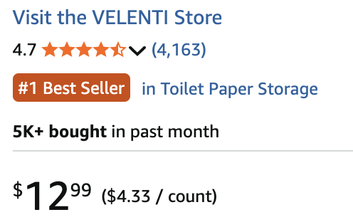
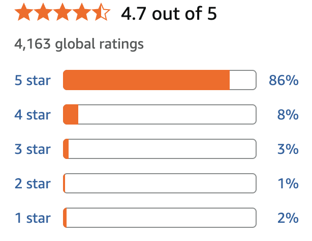

>
>
All ▾

 >
>
All ▾


VELENTI Black Sheep Toilet Roll Holder - 3 Sheep Protecting Your Toilet Paper Like Their Life Depends on It 🐑🐑🐑

🐑 Your Toilet Paper Now Has Bodyguards: Tired of toilet paper mysteriously disappearing? These three black sheep have taken the job. Their mission: stand there, look adorable, and guard your precious rolls like fluffy bathroom security.
🧻 Zero Assembly, Maximum Weirdness No tools, no screws, no confusing instructions. Just place the sheep in your bathroom and suddenly your toilet paper has its own tiny flock. Guests will be confused, amused, and slightly impressed.
😂 The Bathroom Conversation Starter Warning: people will talk about this. Friends will laugh, family will question your life choices, and someone will definitely ask where you got the sheep that holds toilet paper.
🎁 The Gift Nobody Expected Perfect for birthdays, housewarmings, or confusing your friends in the best possible way. Because nothing says “I care about you” like a sheep holding toilet paper.
Customer's reviews

I bought these thinking they would just be a funny decoration. But one guest thought the sheep were actually part of a system and carefully put every new roll onto the sheep like they were following some kind of bathroom rule. Now everyone who visits does the same thing. Apparently the sheep are now officially in charge of toilet paper management.
I bought these sheep toilet paper holders just for fun, and they already looked ridiculous in the bathroom. But at Christmas I decided to make tiny Santa hats for them. Now there are three sheep wearing Santa hats proudly guarding the toilet paper like it's their holiday mission. The best part was when my family walked into the bathroom, stopped, and just stared at them for a few seconds before asking, “Why are the toilet sheep celebrating Christmas?” Honestly, I don't know anymore—but the sheep seem very happy about it. 🎅🐑🧻
I completely forgot I bought these sheep toilet paper holders… until one night. At about 2 AM I walked into the bathroom half asleep, turned on the light, and suddenly saw three black sheep staring at me from the corner while holding toilet paper. I froze for a second because my brain couldn't process why there were sheep in my bathroom. Then I remembered. Now I'm fully awake every time I go to the bathroom at night. The sheep are doing an excellent job keeping me alert. 🐑🧻😆